Парку́р (искаж. фр. parkour) – искусство рационального перемещения и преодоления препятствий с использованием прыжковых элементов, как правило, в городских условиях. Многими занимающимися воспринимается как стиль жизни. Сутью паркура является движение и преодоление препятствий различного характера. Это могут быть как существующие архитектурные сооружения (перила, парапеты, стены и пр.), так и специально изготовленные конструкции.
Паркур – дисциплина, представляющая собой совокупность навыков владения телом, которые в нужный момент могут найти применение в различных ситуациях человеческой жизни. Основные факторы, используемые трейсерами (trace – путь, маршрут) – людьми, занимающимися паркуром: сила и верное её приложение, умение быстро оказаться в определённой точке пространства, используя лишь своё тело. Главной идеей паркура является выраженный Давидом Беллем принцип нет границ, есть лишь препятствия, и любое препятствие можно преодолеть. Основные ограничения в паркуре определяются тремя его аксиомами: "Безопасность, Эффективность, Простота".Показать больше
Паркур не учит использовать какие-либо средства или приспособления, а позволяет использовать только собственное тело и развивать навыки поведения в условиях «здесь и сейчас». Деревья, стены, крыши, парапеты и перила – обыкновенные препятствия трейсера. Крайне важны скорость реакции, умение оценивать обстановку и свои возможности. Показать меньше
Сыграй в игру «НАЙДИ ПАРУ» о паркуре и получи промокод на бесплатное первое занятие!
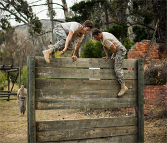
История
Перед Первой мировой войной во Франции создается так называемый «Натуральный метод» (фр. Methode naturelle) движения. На основе наблюдения за аборигенами Африки, за тем, как они охотятся и двигаются, была создана новая универсальная методика обучения для солдат. Такие дисциплины как бег, прыжки, скалолазание, самооборона, поднятие и метание предметов, эквилибристика, плавание и другие – являлись базовыми составляющими «натурального метода». Метод показал себя очень действенным и эффективным на протяжении Первой и Второй мировых войн.
Раймонд Белль, служивший в вооруженных силах Франции, практиковал «Натуральный метод». После окончания службы он пошёл в пожарную охрану. Его физические способности и навыки не раз помогали ему спасать людей в ситуациях, где техника была бессильна. Он быстро стал известен как один из самых ловких и сильных пожарных своего полка, был чемпионом по скоростному карабканью по канату, совершил несколько подвигов при спасении людей, и был награждён за свою храбрость медалями.
Сын Раймонда, Давид Белль (1973), с детства старался подражать своему отцу: занимался гимнастикой, лёгкой атлетикой, боевыми искусствами. Именно он собрал первую команду «Yamakasi», с которой много лет тренировался в городе Лисс. Cтало понятно, что это целая тренировочная дисциплина, имеющая свои элементы, законы и правила.
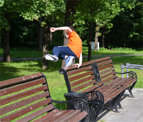
Причины заниматься паркуром
Паркур – это весело! Он учит бороться со страхом перед окружающим миром, превращая город в гигантскую игровую площадку. Интересно находить необычные способы перемещения по городу. Это помогает тебе не потерять внутреннего ребенка, выпустить его наружу, исследовать город и границы возможностей собственного тела, да и просто поиграть.
Паркур – это физическая нагрузка. Бег, прыжки, лазанье по стенам. Паркур – это тренировка для всего тела, которая одновременно улучшает и владение телом, и координацию движений.
Паркур – отличный способ завести друзей. Это командный спорт. Обычно им занимаются в группах, члены которых очень дружелюбны и поддерживают друг друга. Это не соревнование. Общая цель – хорошо провести время и совершенствовать себя.
Паркур – это вызов самому себе. Он требует от тебя физического и умственного напряжения. Ты сможешь доказать себе, на что ты способен, стать увереннее в себе, и это отразится на других областях жизни.
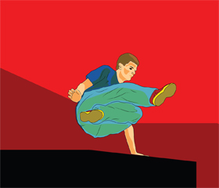
Фильмы и игры с элементами паркура
Паркур получил широкую известность после выхода фильмов «Ямакаси: Новые самураи» о команде трейсеров и фильмов «Тринадцатый район» и «13-й район: Ультиматум» (автор сценариев – Люк Бессон), в которых Давид Белль снялся в одной из главных ролей.
Элементы паркура есть в сценах погонь в одном из фильмов бондианы «Казино "Рояль"».
В 2007 году режиссёр Руслан Бальцер снял российский фильм «Дерзкие дни», рассказывающий о приключениях команды трейсеров «Urban Monkeys».
Элементы паркура есть в приключенческом фильме «Принц Персии: Пески времени» (2010).
В снятом в 2011 году российском боевике «Бой с тенью 3D: Последний раунд» в сцене погони на гонконгском рынке также есть элементы паркура.
Некоторые элементы паркура в сочетании с боевыми сценами часто использовал в своих фильмах Джеки Чан.
В 2007 году студия Core Design Ltd. выпустила игру про паркур – «Free Running».
В 2008 году студия EA Digital Illusions Creative Entertaiment выпустила паркур-игру «Mirror's Edge». Игра получила высокие оценки и отзывы множества трейсеров самого высокого уровня. Она отличается высоким реализмом и качественно передает движения трейсера при преодолении препятствий.
Стиль передвижения персонажа игрока паркуром приобрел достаточную популярность и в других играх, в которых происходят активные передвижения игрока, в том числе и по вертикали и над землей (например, по крышам). К числу таких игр относятся: Серия игр «Assassin’s Creed» Онлайн игра «Warframe», игры «Free Running», «Dying Light» и «The Following».
Тренировки по паркуру
Простые трюки
ЛАЧ
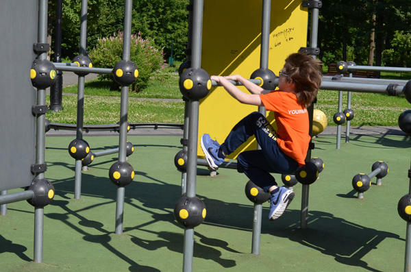
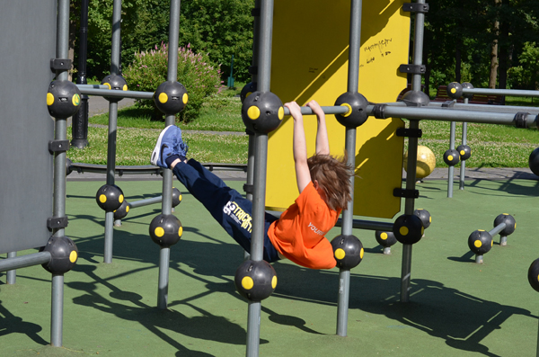
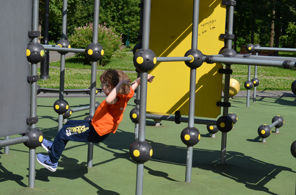
МАНКИ-КОНГ
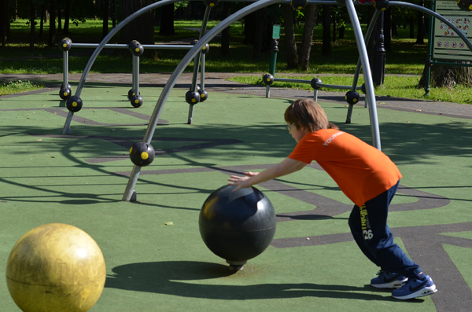
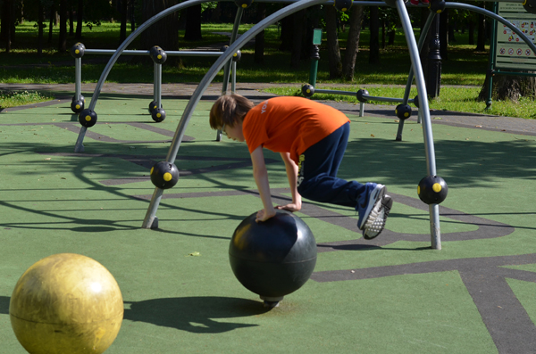
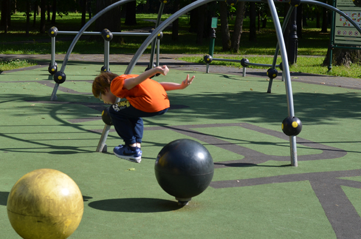
РАЗГИБ
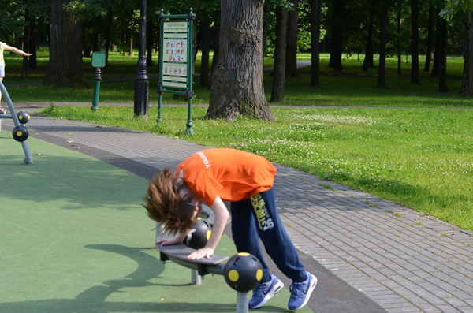
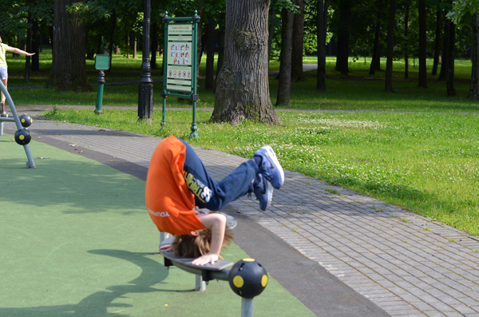
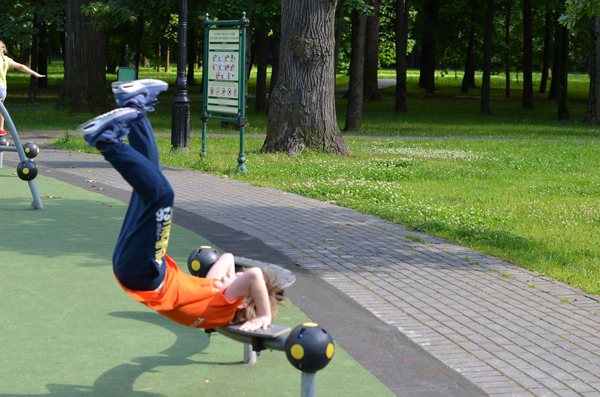
Фотогалерея о паркуре
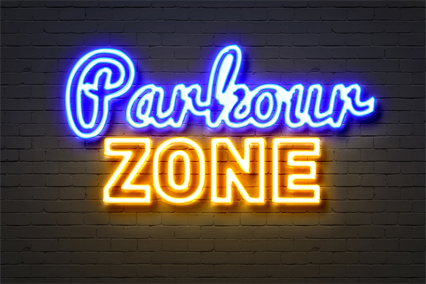
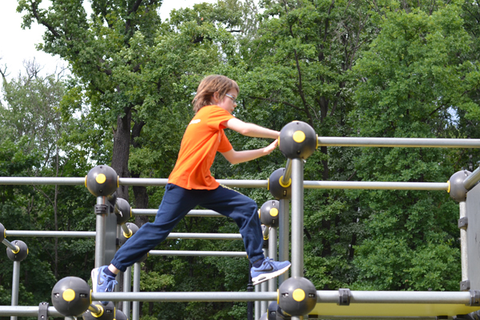
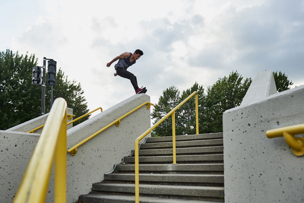
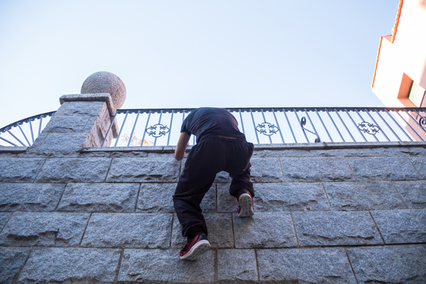
Видео тренировок по паркуру
Где тренироваться – секции паркура
На тестовой странице частично использованы текстовые материалы из Википедии.